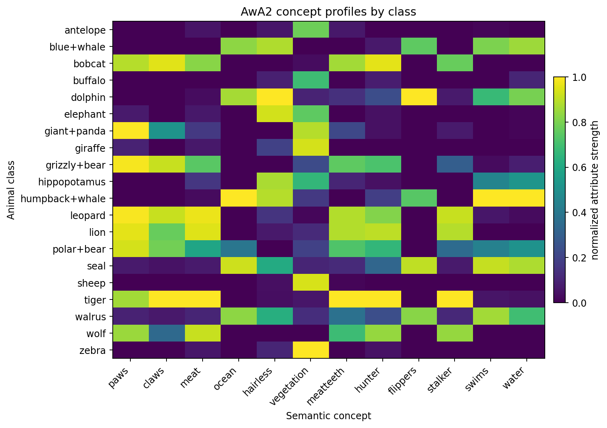
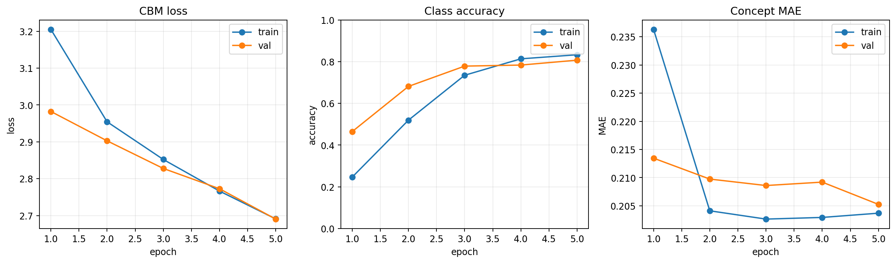

Explainability makes model behavior inspectable, testable and accountable.
Explainable AI studies how to expose the reasons, sensitivities and internal structure behind a model prediction. In computer vision, this usually means connecting a class score to visual evidence: pixels, regions, feature maps, concepts or explicit intermediate variables.
Transparency
The explanation should expose something about the model mechanism: gradients, activations, concept directions, bottleneck variables or prediction changes after intervention.
Faithfulness
The explanation should track the evidence actually used by the model. If highlighted evidence is removed, the class score should change in a coherent direction.
Human alignment
The explanation should be interpretable at the right abstraction level. Pixel heatmaps are useful for localization; concepts such as stripes, horns or flippers are closer to human semantic reasoning.
A compact taxonomy of explanations
| Axis | Meaning | Examples in this project |
|---|---|---|
| Local vs global | Local explanations describe one prediction; global explanations describe broader model behavior. | Grad-CAM and Integrated Gradients are local. TCAV and concept summaries are closer to global diagnostics. |
| Post-hoc vs intrinsic | Post-hoc methods explain an already trained model; intrinsic methods build interpretability into the architecture. | Saliency maps are post-hoc. The Concept Bottleneck Model is intrinsic because concepts are part of the prediction path. |
| Feature vs concept level | Feature-level explanations assign relevance to pixels or activations; concept-level explanations use semantic attributes. | Input gradients measure derivatives with respect to normalized pixels. Grad-CAM operates on convolutional activations. TCAV and the bottleneck operate on AwA2 semantic attributes. |
| Associational vs interventional | Associational explanations describe sensitivity; interventional tests modify evidence and measure prediction changes. | Gradients are sensitivity signals. Background perturbations, deletion and insertion curves are intervention-based tests. |
The central risk
A model can classify an animal correctly for the wrong reason: snow for polar bear, water for seal, grassland for antelope, texture or color statistics instead of morphology. A saliency map can look convincing while still reflecting this shortcut.
The audit principle
Explanations should be treated as hypotheses. A heatmap is credible only after testing stability, class-specificity, faithfulness under deletion/insertion, and agreement with higher-level concepts.
Attribution is not the same as understanding.
The project starts from a practical concern in explainable computer vision: saliency maps often look persuasive because they highlight regions near the object, but this visual plausibility does not guarantee that the model uses the animal morphology rather than contextual shortcuts.
An end-to-end audit, not a single heatmap.
The project is organized as a progressively stricter audit. It starts with a trained classifier, produces local attribution maps, quantifies their stability under controlled perturbations, and then compares pixel-level evidence with concept-level and architecture-level explanations.
AwA2 data preparation
The AwA2 images are organized through a manifest that stores image path, class name, numeric label and split. ResNet-compatible transforms resize the image to 256 pixels, center-crop to 224 x 224, and normalize with ImageNet statistics.
ResNet50 baseline
A pretrained ResNet50 is fine-tuned by replacing the final classifier with an AwA2-specific output layer. The checkpoint becomes the object under audit: explanations are analyzed for this trained model, not for an abstract architecture.
Local attribution maps
Input gradients, Grad-CAM and Integrated Gradients are computed for selected target classes on correctly and incorrectly classified examples. These maps are local score-sensitivity diagnostics: they indicate where the chosen logit is sensitive, not where the model necessarily performs human-like semantic recognition. Intermediate tensors are logged to inspect gradient magnitude, activation scale and saliency normalization.
Background stress test and metrics
Background regions are perturbed through Gaussian noise, RGB channel shift and background replacement. Explanations are compared with top-20% saliency IoU, Spearman rank correlation and mean saliency drift.
Concepts, TCAV, bottleneck and sanity checks
The audit then moves from pixels to concepts: AwA2 attributes, TCAV directional derivatives, a Concept Bottleneck Model and saliency sanity checks evaluate whether explanations are semantically aligned and model-dependent.
What each explanation method measures.
The methods used here answer different mathematical questions. A heatmap should therefore be read as a diagnostic signal, not as a direct proof of causal visual reasoning.
Sensitivity
Gradient-based saliency estimates how much the selected class score changes under infinitesimal variations of the input. This is a local derivative property of the model around one image.
Attribution
Attribution assigns a scalar relevance value to pixels, regions, channels or concepts. The assignment is method-dependent and must be interpreted relative to the target score and baseline.
Causality
Causal evidence requires intervention. If an explanation claims that a region is important, perturbing that region should produce a consistent effect on the prediction.
Input gradients
For class score Sc(x), vanilla saliency measures local sensitivity of the score to infinitesimal pixel changes. High values indicate pixels where a small perturbation would most affect the selected class logit around the current input.
Interpretation limit: a large gradient can indicate sensitivity to texture, edge contrast or preprocessing scale, not necessarily semantic evidence.
Grad-CAM
Grad-CAM builds a coarse class-conditional localization map from the final convolutional feature maps. The gradient of the class score with respect to each channel is globally averaged to obtain channel weights. A weighted sum of activations is then rectified and upsampled.
M_cam^c = ReLU(sum_k alpha_k^c A^k)
Interpretation limit: the map is not pixel evidence. It is an upsampled 7 x 7 activation-level signal, so apparent object boundaries can be visually suggestive but spatially imprecise.
Integrated Gradients
Integrated Gradients accumulates gradients along a path from a baseline image to the original image. This project uses a heavily blurred version of the same image as baseline, preserving global brightness and color statistics better than a black image while removing much of the fine object structure.
Interpretation limit: the explanation depends on the baseline and on the path through input space. Baseline choice is part of the model interpretation.
TCAV
TCAV tests whether a human-defined concept direction in representation space increases the target class score. Concept Activation Vectors are learned from positive and negative examples of a concept.
TCAV(k,c) = P_x[D_{k,c}(x) > 0]
Interpretation limit: a high TCAV score means the concept direction is influential, but it does not prove that the model uses that concept in every image.
Completeness and baseline dependence
Integrated Gradients is designed to satisfy a completeness relation: the sum of attributions approximates the difference between the class score at the input and the class score at the baseline. This makes the baseline a scientific assumption, not a cosmetic implementation detail.
A black baseline can introduce an artificial out-of-distribution reference image. A blurred baseline keeps low-frequency color and illumination while removing fine object structure.
Faithfulness and stability
An explanation is faithful only if it tracks the evidence used by the model. It is stable only if small or semantically irrelevant changes do not produce arbitrary explanation changes. This project evaluates both properties by comparing original and perturbed saliency fields.
A heatmap that remains visually attractive but fails perturbation, rank-correlation or sanity checks should be treated as weak explanatory evidence.
Correct and incorrect predictions reveal different attribution behavior.
The first visual inspection compares the original image with input gradients, Grad-CAM and Integrated Gradients. These maps should be interpreted as target-score diagnostics, not as direct statements about what the model understands. A correct prediction can have a misleading heatmap, and an incorrect prediction can still produce a visually structured attribution map.
Why some attribution interpretations are wrong
The most common mistake is to read a heatmap as if it were a human visual explanation. In this project, the map is instead a mathematical object tied to a specific target score, preprocessing pipeline and attribution method. The same image can produce different maps for the true class, the predicted class and the second-best class.
| Incorrect interpretation | More precise interpretation | Why it matters here |
|---|---|---|
| The model is looking at this region. | The selected class score is sensitive to this region or activation pattern. | Sensitivity is not attention and not causal evidence. A highlighted background can still influence the logit. |
| The highlighted pixels caused the prediction. | The method assigns high attribution under its own assumptions. Causality requires intervention. | Deletion, insertion and background perturbations are needed to test whether the highlighted evidence is actually used. |
| A correct prediction means the explanation is correct. | The prediction and the explanation must be evaluated separately. | The model can predict the right animal using context, texture or dataset bias rather than morphology. |
| A coherent heatmap on a wrong prediction is useless. | It can still explain why the wrong class score became high. | Misclassified examples are valuable because they expose which evidence supports the model's error. |
| Grad-CAM precisely localizes the animal. | Grad-CAM is an upsampled low-resolution map from late convolutional activations. | Sharp-looking overlays can hide the fact that the original ResNet50 layer4 map is only about 7 x 7. |
| Integrated Gradients gives an absolute explanation. | Integrated Gradients explains score change relative to a chosen baseline. | The blurred baseline is intentionally used because a black baseline can introduce unrealistic contrast and brightness shifts. |
| Input gradients show semantic object parts. | Input gradients show local derivatives with respect to normalized RGB input values. | They can emphasize edges, texture, normalization artifacts or high-frequency sensitivity rather than animal morphology. |
Target-class dependence
Every attribution map is conditioned on a target score. For a misclassified image, explaining the predicted class and explaining the true class are different operations. A map for the wrong predicted class should be read as evidence for the model's error, not as evidence for the true label.
Normalization dependence
Heatmaps are usually min-max normalized independently per image. This makes visual overlays readable, but it can exaggerate weak signals and make maps with different absolute magnitudes look equally strong. Tensor statistics are therefore logged before relying on the visualization.

Correctly classified examples. Grad-CAM gives a low-resolution class-conditional localization signal, while Integrated Gradients and input gradients expose input-space sensitivity. The relevant question is whether these signals remain stable and faithful under intervention, not whether they look visually aligned with the animal.

Misclassified examples. The attribution is computed for the selected target score, often the wrong predicted class. A coherent-looking heatmap can therefore explain the model's wrong score assignment rather than the true animal identity. This is why visual plausibility is insufficient as an explanation criterion.
Stress testing separates visual appeal from explanation stability.
The stress test perturbs the background while preserving the animal region as much as possible. A robust morphology-based explanation should remain concentrated on the animal. In practice, the saliency maps drift under background changes, and the model sometimes changes the predicted class.
Gaussian noise
Random noise is injected into background pixels. This tests sensitivity to high-frequency non-semantic variation.
Color shift
RGB channels are inverted or shifted in the background. This tests whether color statistics contribute to the class decision or attribution map.
Background swap
Background pixels are replaced by uniform random texture. This is the strongest perturbation and produced the largest prediction change rate in the evaluated subset.

Perturbation examples. The animal remains visually identifiable, while the background statistics are changed to test shortcut reliance.

Saliency comparison under perturbation. The important signal is not only whether the prediction changes, but whether the explanation moves when the semantic object is mostly preserved.
| Method | Perturbation | Prediction change | Mean top-20% IoU | Interpretation |
|---|---|---|---|---|
| Integrated Gradients | Background swap | 0.75 | 0.278 | Large class instability and low saliency overlap indicate strong dependence on background statistics. |
| Integrated Gradients | Color shift | 0.50 | 0.252 | The lowest IoU appears under color changes, consistent with IG sensitivity to input-space paths. |
| Grad-CAM | Background swap | 0.75 | 0.517 | The coarser map is more spatially stable than IG, but the prediction itself remains fragile. |
| Grad-CAM | Color shift | 0.50 | 0.570 | Higher overlap does not imply causal correctness; it can reflect the low spatial resolution of layer4 maps. |
Spearman = rank_correlation(flatten(M_original), flatten(M_perturbed))
Top-k IoU as support overlap
Top-k IoU ignores the exact heatmap values and asks whether the most salient pixels remain in the same spatial support. It is therefore useful for detecting explanation relocation under perturbation.
Spearman as ranking stability
Spearman correlation compares the rank ordering of saliency values. It detects whether the relative importance structure is preserved even when absolute heatmap intensities change.
Concept analysis moves the audit from pixels to semantics.
AwA2 contains attribute annotations such as furry, horns, hooves, stripes and flippers. These attributes let the project compare pixel-level explanations with concept-level structure in the representation space.

Class-concept heatmap. The matrix summarizes which semantic attributes are expected for each class, providing a bridge between dataset metadata and representation-level explainability.

TCAV heatmap. TCAV quantifies whether moving in a concept direction increases the target class score in the model's internal representation.

Top TCAV scores. High values indicate target classes whose logits are positively sensitive to a concept direction. For example, several classes show high sensitivity to the flippers direction, including classes where this is semantically plausible and others where it may indicate an entangled representation.
| Target class | Concept | TCAV score | Interpretation |
|---|---|---|---|
| seal | flippers | 1.000 | Concept direction is consistently aligned with increasing the seal score. |
| dolphin | flippers | 1.000 | Semantically plausible concept sensitivity. |
| tiger | stripes | 0.933 | Expected sensitivity to a discriminative visual attribute. |
| polar bear | flippers | 0.900 | Potential concept entanglement or dataset bias requiring inspection. |
Concept bottlenecks and sanity checks make the audit stricter.
Saliency maps explain a prediction after it has been made. A Concept Bottleneck Model introduces an intermediate concept layer and exposes whether the classifier can operate through human-readable attributes. Sanity checks then test whether saliency methods are actually model-dependent.

CBM training dynamics. The model is optimized jointly for concept prediction and class prediction, making the explanatory interface part of the architecture.

CBM summary. The bottleneck reaches lower accuracy than the baseline, but it produces a more inspectable prediction path through explicit concepts.

Concept interventions. Changing concept values tests whether the downstream class prediction is causally sensitive to interpretable attributes rather than only correlated with them.

Sanity audit. Vanilla gradients are compared with SmoothGrad, occlusion maps and randomized-model saliency. The low similarity to randomized saliency is necessary, while the modest similarity to occlusion highlights that gradient maps and perturbation maps capture different signals.
| Comparison | Mean top-20% IoU | Mean Spearman | Technical reading |
|---|---|---|---|
| Vanilla gradients vs SmoothGrad | 0.253 | 0.366 | Smoothing stabilizes part of the gradient signal, but the overlap is far from complete. |
| Vanilla gradients vs Occlusion | 0.201 | 0.158 | Gradient sensitivity and finite occlusion importance identify different evidence patterns. |
| Vanilla gradients vs randomized model | 0.119 | 0.111 | Low similarity is desirable: the explanation changes when the learned model is destroyed. |
A complete attribution audit needs faithfulness, stability and specificity.
The extended implementation evaluates saliency maps as ranked evidence. Instead of asking whether a heatmap looks plausible, the audit asks whether the highlighted pixels are necessary, sufficient, stable under small perturbations, allocated to the animal rather than the background, and specific to the selected class.
Deletion and insertion
Deletion replaces the most salient pixels with a blurred baseline and measures how quickly the target probability decreases. Insertion starts from the baseline and restores the most salient pixels, measuring how quickly the target probability is recovered.
Insertion(k) = S_c(baseline with Top_k(M) restored from x)
A faithful map should produce low deletion AUC and high insertion AUC. The gap between the two curves summarizes how useful the saliency ranking is as evidence ordering.
Foreground versus background attribution
Because AwA2 does not provide exact object masks, the implementation uses the same explicit central foreground proxy used by the stress test. The diagnostic measures how much normalized saliency falls inside the approximate animal region and how much falls outside it.
BackgroundRatio = sum(M * BackgroundMask) / sum(M)
A high background ratio is direct evidence that the explanation assigns relevance to contextual image statistics, which is the central failure mode investigated in this project.
Class-discriminativeness
A class-specific explanation should change when the target class changes. The implementation therefore compares attribution maps for the top-1 and top-2 predicted classes on the same image using top-20% IoU and Spearman rank correlation.
Very high similarity suggests that the method highlights generic image structures rather than discriminative evidence for a particular class score.
Sensitivity, entropy and IG baselines
The audit also compares maps before and after small input noise, measures normalized saliency entropy, and compares Integrated Gradients from blurred and black baselines.
BaselineEffect = similarity(IG_blurred(x), IG_black(x))
These diagnostics expose fragile explanations, overly diffuse maps and attribution changes caused by the choice of reference image rather than by the classifier alone.
The project does not reject explainability. It rejects untested explainability.
Grad-CAM and Integrated Gradients are useful diagnostic tools, but they are not sufficient evidence that a model understands animal morphology. In this project, saliency maps are treated as hypotheses: they must be stress-tested, compared with perturbation metrics, connected to semantic concepts and validated through sanity checks.
What the heatmaps show
They identify regions where logits are sensitive to activations or pixels. They can reveal object-centered sensitivity, background dependence and failure modes in misclassified examples.
What the complete audit adds
The stress test quantifies saliency instability, TCAV links representations to concepts, the bottleneck exposes an interpretable prediction path, and sanity checks test model dependence.